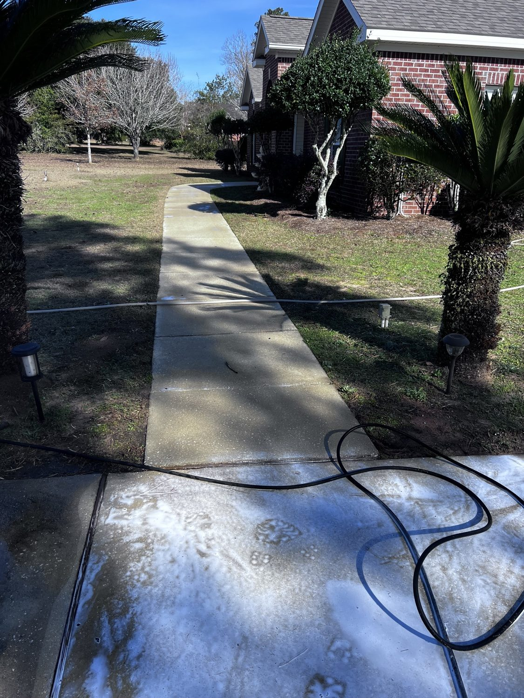

From the blog
Sidewalk and Walkway Washing in Mobile, AL: What to Expect
November 2, 2026

The walkway is the first thing guests see, and in Mobile it takes a beating. Rain, humidity, shade trees, and red dirt all work together to turn concrete dark, green, and slick. Around West Mobile, Midtown Mobile, Saraland, and Semmes, we see the same pattern every fall: the front walk that looked fine in spring is stained by November, and the path to the back door is slippery after every rain.
A walkway wash is a simple job with a big visual payoff. Here is what it covers, what it costs, and how to keep it looking good longer.
Why Mobile walkways go dark
Concrete is porous, so it soaks up dirt and moisture. In our climate, algae and mildew grow fast in shaded spots, especially on north facing walks and paths under trees. Leaves pile up in fall and stain the surface as they break down. Add in mud tracked from the yard, and a walkway can look years older than it is. The green film is not just ugly. It gets slick when wet, which is a real problem on steps and on the path guests use at night.
What a professional wash covers
- Full surface wash. Every section of sidewalk and walkway, front walk, side path, and back patio path, washed edge to edge.
- Spot treatment. Algae, mildew, leaf stains, and dirt buildup get treated before washing so the clean goes deeper than the surface.
- Edges and joints. Grass creeping over the edges gets trimmed back from the concrete, and dirt packed into expansion joints gets flushed out.
- Steps and landings. Porch steps and landings are washed too, since those are the spots where a slip is most likely.
- Final rinse. Everything is rinsed clean so no grit or cleaning residue is left underfoot.
We do not blast concrete at full pressure and hope for the best. The wash is matched to the surface so it cleans deep without chewing up the concrete or blowing out joint material.
What it costs
Concrete patio and walkway washing is priced at $0.25 per square foot plus $100. A 400 square foot walkway and patio area runs $200. Larger areas cost more by the same formula, and we confirm the exact square footage before we start so the price you see is the price you pay. If you bundle 3 or more services, you save 10 percent, and veterans save 10 percent with ID verified at the job. Only one discount applies per order, and we always give you the best one that fits.
A walkway wash pairs well with a driveway wash or a gutter cleanout, since the crew and equipment are already on site. If you are already booking a house wash, adding the walkway is an easy way to finish the whole front of the home in one visit.
Keeping it cleaner longer
- Sweep leaves off promptly. Leaves left sitting on concrete stain it as they rot, so a quick sweep after a windy day pays off.
- Trim back overhanging branches. More sun on the walk means slower algae growth.
- Rinse after muddy weeks. A garden hose rinse keeps surface dirt from settling into the pores.
- Fix drainage spots. If water pools on one section after every rain, that section will always go green first. Grading or a simple drainage fix helps more than repeated washing.
Most Mobile walkways benefit from a wash once a year, and shaded walks under big trees may need it twice a year. If the walk is already dark and slick, it is past time.
When to book
Fall is a smart time. Leaves are down, the holiday season is coming, and guests will be using that front walk. A clean walkway also makes the whole house look cared for, which matters if you are listing, hosting family, or just tired of looking at a stained path every morning.
Walkway looking dark or slick? We can fix that.
Kinney Cleaning Services washes sidewalks, walkways, patios, and driveways across Mobile County. Veteran owned and operated.
Call (251) 767-0754 Get a Custom Quote